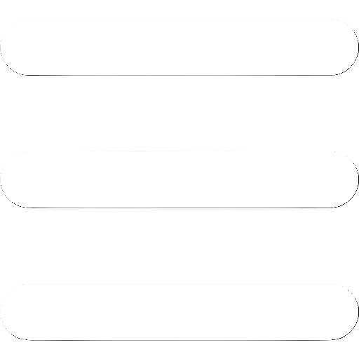

主頁
佇列
設定
關於

下載
下載
設定
通知設定
啟用下載完成通知(實驗性)
下載設定
在檔名後方加上影片格式
同時下載上限（建議 3~5）：
下載路徑：
瀏覽
重設為預設值
版本：
—
發布日期：2025.01.20
作者：老魚oldfish
前往 GitHub 專案
載入中...
確定
取消
確定
載入中...
畫質
請選擇畫質
影片格式
請選擇格式
取消
下載
播放清單
共 0 部影片
×
全選
套用最高畫質/位元率
影片格式(一次套用至所有)
-請選擇影片格式-
-請選擇影片格式-
影片(mp4)
音訊(mp3)
個別選擇格式